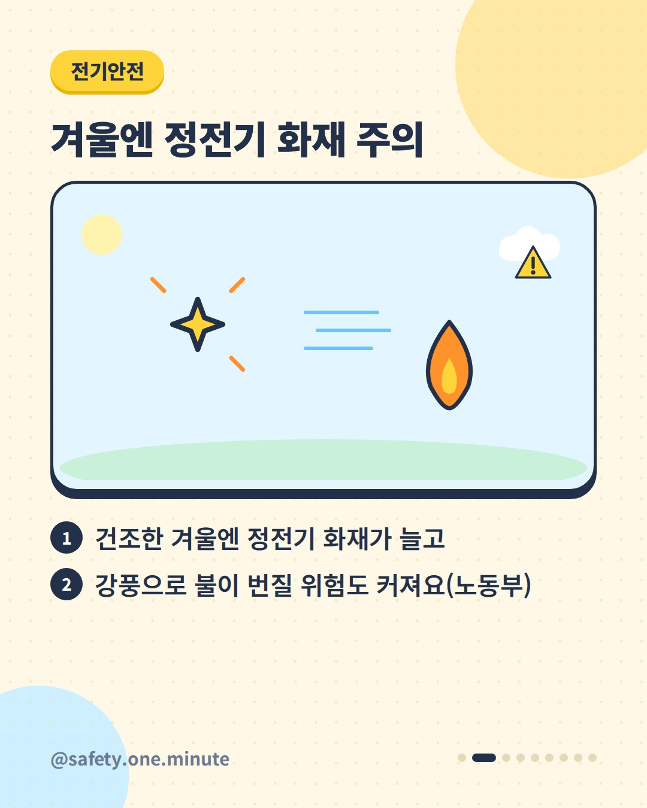
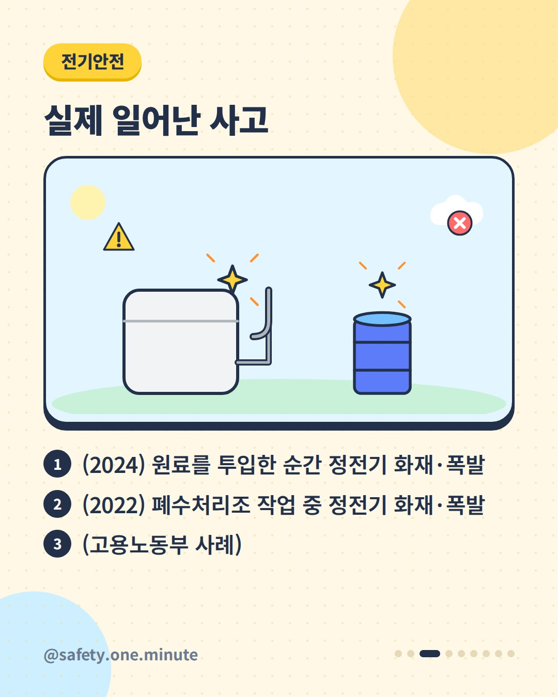
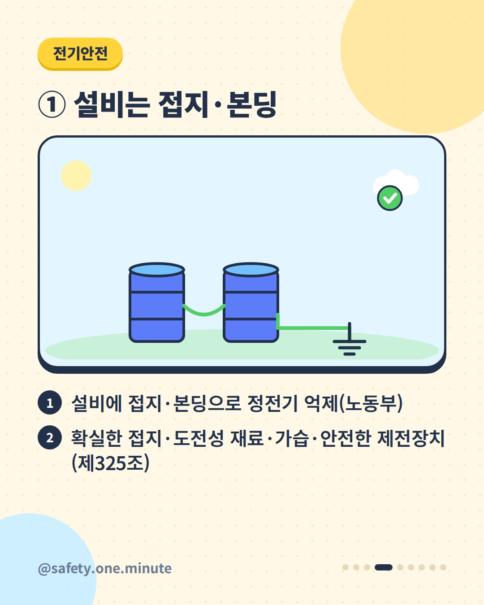
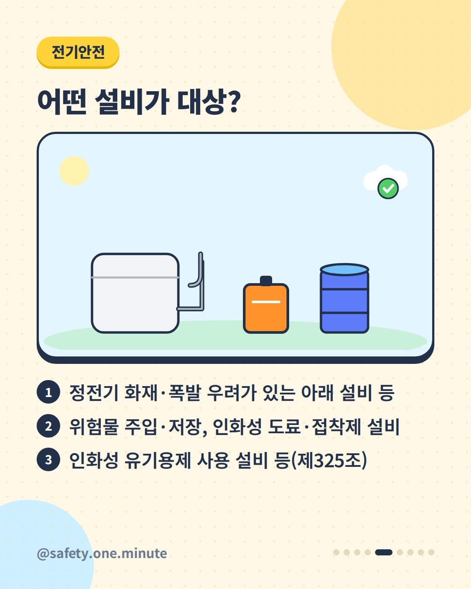
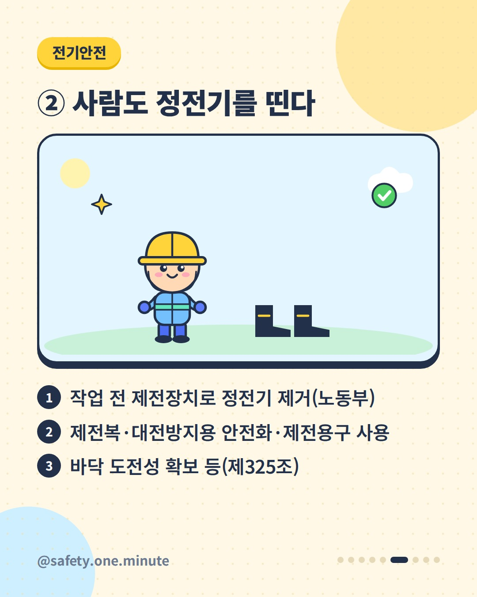
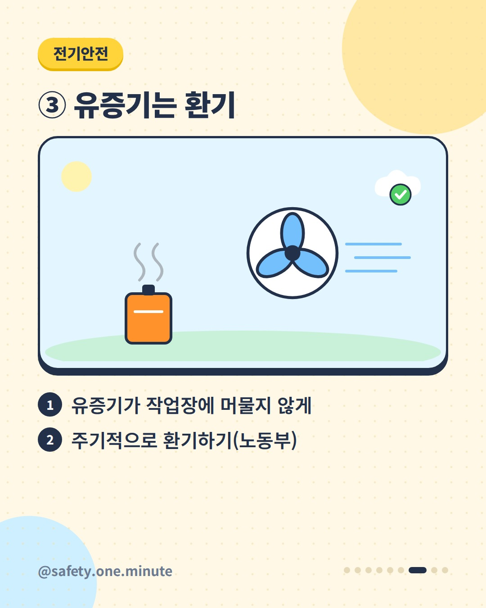
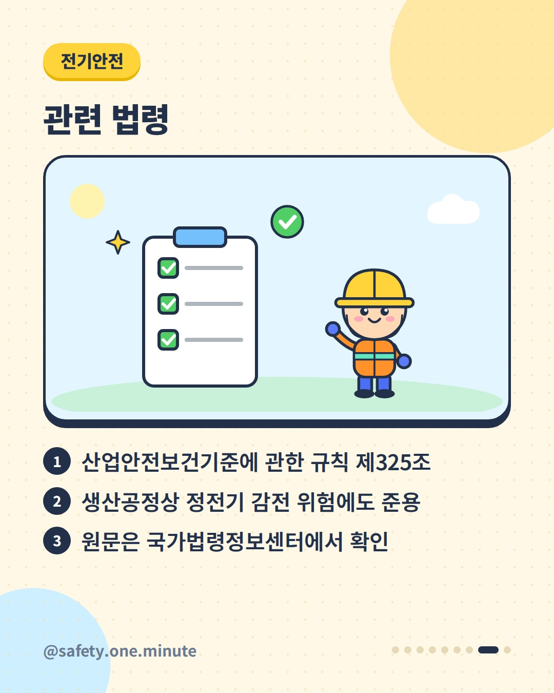
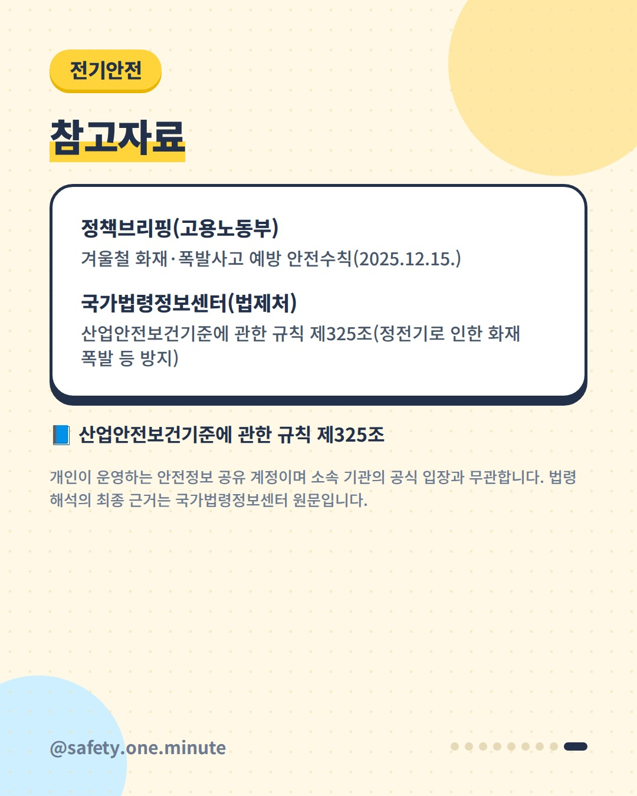

정전기로 불이 날까? — 9장 (4:5)








캡션
겨울에 '찌릿' 하는 정전기, 작업장에선 불씨가 될 수도 있습니다. 고용노동부는 겨울철 건조한 기후에 정전기로 인한 화재가 늘고 강풍으로 화재 확산 위험도 커진다고 안내했습니다(2025.12.). 원료를 투입하던 순간(2024), 폐수처리조 안에서 작업하던 중(2022) 정전기로 화재·폭발이 난 사례도 소개했습니다. 이렇게 막을 수 있습니다. ① 설비는 접지·본딩으로 정전기 억제 — 위험물 주입·저장 설비, 인화성 도료·접착제·유기용제 사용 설비 등에서 정전기 화재·폭발 우려가 있으면 확실한 접지, 도전성 재료, 가습, 점화원이 될 우려가 없는 제전장치 등(제325조) ② 작업 전 제전장치로 정전기 제거(노동부), 제전복·대전방지용 안전화 착용·제전용구 사용, 바닥 도전성 확보 등(제325조) ③ 유증기가 작업장에 머물지 않도록 주기적으로 환기 ※ 세부 대상 설비는 법령 원문(2025.9.1. 시행본 기준)을 확인하세요. 출처: - 고용노동부 – 겨울철 화재·폭발사고 예방 안전수칙(2025) - 국가법령정보센터(법제처) – 산업안전보건기준에 관한 규칙 제325조 개인이 운영하는 안전정보 공유 계정이며 소속 기관의 공식 입장과 무관합니다. 법령 해석의 최종 근거는 국가법령정보센터 원문입니다. #정전기 #화재폭발 #접지 #겨울철안전 #전기안전 #산업안전